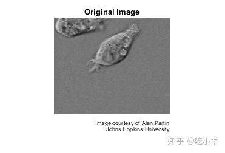
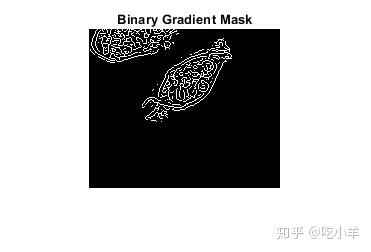
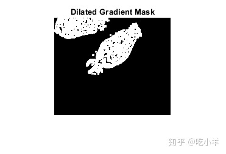
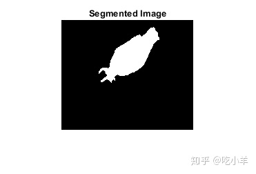
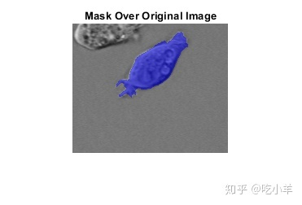
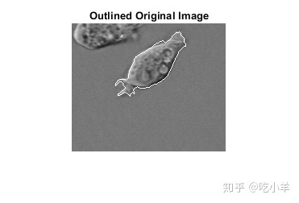

Home
本示例说明如何使用边缘检测和基本形态来检测细胞。如果对象与背景有足够的对比度，则可以轻松地在图像中检测到对象。
步骤1：读取图片
读取cell.tif图像，该图像是前列腺癌细胞的图像。此图像中存在两个单元格，但整个区域只能看到一个单元格。目的是检测或分割完全可见的细胞。
I = imread('cell.tif');
imshow(I)
title('Original Image');
text(size(I,2),size(I,1)+15, ...
'Image courtesy of Alan Partin', ...
'FontSize',7,'HorizontalAlignment','right');
text(size(I,2),size(I,1)+25, ....
'Johns Hopkins University', ...
'FontSize',7,'HorizontalAlignment','right');

步骤2：检测整个单元格
待分割的对象与背景图像的对比度差异很大。对比度的变化可以用图像梯度算子检测计算。要创建包含分割细胞的二进制蒙版，请计算梯度图像并应用阈值。
使用edge和Sobel算子来计算阈值。调整阈值，然后再次使用edge以获得包含分割细胞的二进制蒙版。
[~,threshold] = edge(I,'sobel'); fudgeFactor = 0.5; BWs = edge(I,'sobel',threshold * fudgeFactor);
显示生成的二进制梯度蒙版。
imshow(BWs)
title('Binary Gradient Mask')

步骤3：图片膨胀
二元渐变蒙版在图像中显示出高对比度的线条。这些线条并没有很好地勾画出感兴趣对象的轮廓。与原始图像相比，渐变蒙版中围绕对象的线条中存在间隙。如果使用线性结构元素对Sobel算子处理过的图像做膨胀操作，这些线性间隙将消失。通过使用strel函数创建两个垂直的线性结构元素。
se90 = strel('line',3,90);
se0 = strel('line',3,0);
使用垂直结构化元素和水平结构化元素来扩展二进制梯度蒙版。imdilate函数做图像膨胀。
BWsdil = imdilate(BWs,[se90 se0]);
imshow(BWsdil)
title('Dilated Gradient Mask')

步骤4：填补内部空白
膨胀后的渐变蒙版很好地显示了单元格的轮廓，但是单元格的内部仍然有孔。要填充这些孔，请使用imfill函数。
BWdfill = imfill(BWsdil,'holes');
imshow(BWdfill)
title('Binary Image with Filled Holes')
步骤5：删除边界上的连接对象
感兴趣的细胞已成功分割，但它不是找到的唯一对象。使用imclearborder函数可以删除连接到图像边框的所有对象。要删除对角连接（diagonal connections），请将imclearborder函数中的连接（connectivity）设置为4。
BWnobord = imclearborder(BWdfill,4);
imshow(BWnobord)
title('Cleared Border Image')

步骤6：平滑对象
最后，为了使分割后的对象看起来自然，请使用菱形结构元素对图像进行两次腐蚀以使对象平滑。使用strel函数创建菱形结构元素。
seD = strel('diamond',1);
BWfinal = imerode(BWnobord,seD);
BWfinal = imerode(BWfinal,seD);
imshow(BWfinal)
title('Segmented Image');

第7步：图像分割可视化
使用labeloverlay函数在原始图像上显示蒙版。
imshow(labeloverlay(I,BWfinal))
title('Mask Over Original Image')

显示分割对象的另一种方法是在分割细胞的周围绘制轮廓。使用bwperim函数绘制轮廓。
BWoutline = bwperim(BWfinal);
Segout = I;
Segout(BWoutline) = 255;
imshow(Segout)
title('Outlined Original Image')

======================================================================
我的测试结果及程序
下面是我测试的代码：

注：本文根据MATLAB官网内容修改而成。